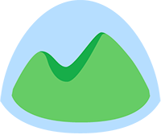
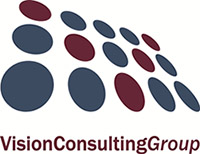

Poznan tej!
Rails Girls comes to Poznan! During the free two-day workshop we'll dive into the magical world of Ruby on Rails.
Apply now! Applications are open until September 4th.
You learn designing, prototyping and coding with the help from our coaches.
You need your own laptop, curiosity and a sprinkle of imagination!
Want to help? We are looking for volunteers and Rails coaches. Email us.
| 18.00 - 20:00 |
Installation partyGet know the attendees a little bit before hand. Bring your laptop if you can, so we can install Ruby on Rails for you.Sponsors, boyfriends, girlfriends and developers that happen-to-be-in-the-neighborhood are more than welcome to join. |
|---|---|
| 20:00 - 22:00 |
Coach DinnerAll of the coaches are welcome to our coach dinner! Thank you for supporting Rails Girls Poznan! |
| 9:00 - 10:00 |
Breakfast, coffee, registration.Coffee, cake, code. |
|---|---|
| 10:00 - 13:00 |
WorkshopHands-on, minds-on learning! Meet Ruby, Rails and much more. |
| 13:00 - 13:45 |
Lunch |
| 13:45 - 14:00 |
Bentobox - Understanding Web Apps |
| 14:00 - 15:00 |
Lightning Talks |
| 14:00 - 18:00 |
WorkshopExtend your application. |
| 18:00 |
AfterpartyOpen for everyone, meet cool people interested in tech. |
Dziennik Internautów
dalach.blogspot.com
melain.wordpress.com
Moje Miasto Poznan
Lepszy Poznan
Codzienny Poznan
WEBROAD.pl
Nasze Miasto
Lepszy Poznan
Application opening: August 20, 2014
Application deadline: September 4, 2014
Acceptances informed: September 8, 2014
Location: WSNHiD, gen. Tadeusza Kutrzeby 10, Poznań - Map
Rails Girls Poznan would not be possible without our amazing sponsors! Want to help? Drop us a line! We're looking for partners & sponsors for the non-profit event!
 ShopAlike is a virtual shopping centre comprised of well-known and widely acclaimed brands and online shops under one roof. The service was designed with the use of the newest Online Marketing trends in order to live up to the expectations of the customers from almost 19 countries for ex. Poland, Germany, France, Italy, Sweden, Netherlands, Russia, Brasil or India. The founder of the virtual shopping centre.
ShopAlike is a virtual shopping centre comprised of well-known and widely acclaimed brands and online shops under one roof. The service was designed with the use of the newest Online Marketing trends in order to live up to the expectations of the customers from almost 19 countries for ex. Poland, Germany, France, Italy, Sweden, Netherlands, Russia, Brasil or India. The founder of the virtual shopping centre.
 GitHub is the best place to share code with friends, co-workers, classmates, and complete strangers. Over three million people use GitHub to build amazing things together.
GitHub is the best place to share code with friends, co-workers, classmates, and complete strangers. Over three million people use GitHub to build amazing things together.
Envato is a bootstrapped Australian company that operates an ecosystem of sites with a global community. We’re passionate about the web, and about enabling creators to make a living doing what they love. At Envato, we make websites that help people from all over the world change the way they earn and learn online. We might be far away from Poznań, but we support Rails Girls all around the world because it's a movement we believe in.
Basecamp is the world’s #1 project management tool. For the last 10 years, companies have been switching to Basecamp because it’s famously easy-to-use, reliable, and It Just Works™!
DigitalOcean is the world’s fastest growing cloud provider built for developers. Our mission is simple: we’re passionate about making complex infrastructure simple and delighting our customers with a seamless experience that brings them joy. New users can easily deploy a blazing fast cloud server in 55 seconds with an intuitive control panel interface, which can be replicated on a larger scale with the company's straightforward API.
 Netguru is an Agile Ruby agency with excellent track record and great communication skills. We love to develop web and apps! Give us a ping!
Netguru is an Agile Ruby agency with excellent track record and great communication skills. We love to develop web and apps! Give us a ping!
Rails Girls Poznan is co-organized with our awesome partners and supporters.
School of Humanities and Journalism is one of the oldest private universities in Poznań. SHJ owns its stable position in the university sector not only because of its ability to meet the changing needs of the job market, but also its unique range of studies at BA, MA and Postgraduate Diploma level. Its best ambassadors are the fantastic students and graduates, past and present, who work with lecturers and business partners whose guiding principle is to be open to young people's development as future professionals.
Vision Consulting Group is Marketing Communication and Public Relations Agency from Poznań. We work on the local market, as well as on the nationwide. We satisfy our Clients’ growing needs with pleasure. Experience with VCG starts from the beginning, when we meet for the first time and invite our Client to the world of new opportunities. Our creative team offers fresh vision, unique ideas and wide knowledge about our branch. Altogether it creates a perfect mix and empowers us to fit our actions precisely to the Client’s needs, products and services.


How much does the workshop cost? Nothing, it's free! You just need to be excited!
Who is this aimed for? Women of any age with basic knowledge of working with a computer. We’ve had people of all ages taking part. Most of the program is run in english and please bring your laptop.
How do you choose the attendees? We want a diverse group of people who are motivated and curious about learning.
Can men attend? Yes, but you need to be accompanied by an interested lady. Also, girls are given a priority.
I know how to program - How can I help? We’re also looking for people to be coaches.
 Ania Banaszek, organizer
@anbanaszek
Ania Banaszek, organizer
@anbanaszek
 Asia Ignaczak, organizer
@j_ignaczak
Asia Ignaczak, organizer
@j_ignaczak
 Monika Filipkowska, organizer
@Gondorya
Monika Filipkowska, organizer
@Gondorya
 Dominika Stempniewicz, organizer and coach
dominika
Dominika Stempniewicz, organizer and coach
dominika